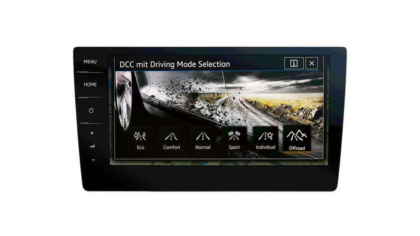
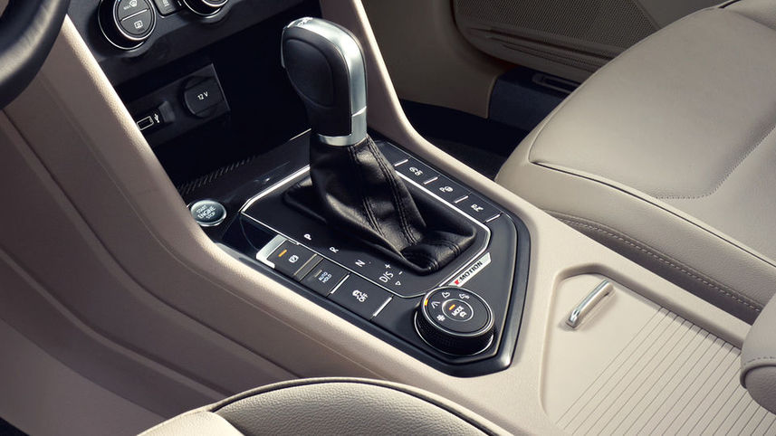
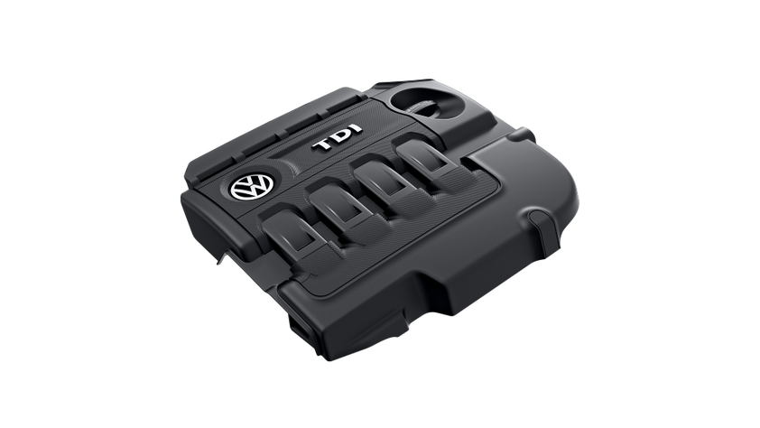
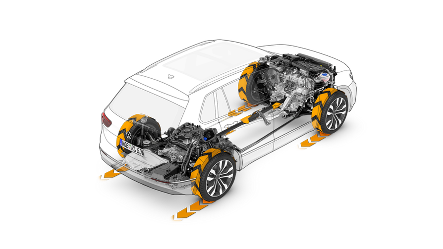

Вибір профілю їзди дозволяє адаптувати роботу двигуна та коробки передач, а також дії певних допоміжних систем до заданих умов. Позиція Normal є стандартною. Вона забезпечує збалансовані параметри керування. Eco підтримує споживання палива на мінімальному рівні, режим Sport робить, зокрема, автомобіль більш динамічним та енергійним, а Comfort забезпечує особливо комфортні відчуття під час керування автомобілем. У режимі Individual можна самостійно налаштувати роботу всіх вузлів на свій розсуд. Якщо Ви оберете двигун із 4MOTION, у Вашому розпорядженні будуть додаткові можливості налаштування системи 4MOTION Active Control, які допоможуть Вам у ситуаціях під час руху бездоріжжям.
Якщо Ви оберете Tiguan Allspace з повним приводом 4MOTION, будь-які погодні та дорожні умови приноситимуть лише задоволення від керування. Для того щоб усі бортові системи могли відповідним чином пристосуватися до зовнішніх умов, існує технологія 4MOTION Active Control, якою зручно користуватися за допомогою обертально-натискного регулятора. Ви можете обирати між чотирма профілями: Snow, Offroad, Offroad Individual та Onroad. Система обмінюється даними з асистентом руху на спуску, асистентом рушання на підйомі, електронною системою підтримання курсової стійкості та електронним блокуванням диференціала. Залежно від обраного профілю змінюються такі характеристики, як чутливість педалі акселератора, перемикання передач, гальмування двигуном, регулювання тягового зусилля та ступінь блокування. Результат: ще більш комфортне керування навіть на снігу та ґрунтових дорогах.
Двигуни TSI мають надзвичайну ефективність завдяки поєднанню прямого впорскування бензину та інтелектуальної технології турбонаддуву. Двигуни TDI з технологією Common-Rail в свою чергу мають переконливу економічність та високе тягове зусилля.
Постійний повний привод 4MOTION контролює роботу кожного колеса, щоб вона відповідала поверхні, з якою колесо контактує. Таким чином можна гарантовано запобігти пробуксовуванню та блокуванню коліс. І Ваш автомобіль отримає надійне зчеплення майже на будь-якій поверхні.
